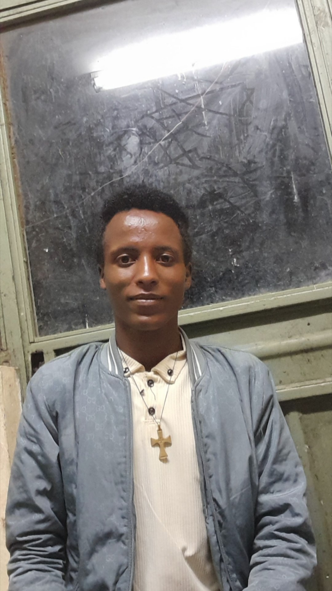

Welcome to HydroOS
HydroOS is an innovative Smart Water Monitoring platform designed to connect Water Resources Engineering with modern software technology.
Our mission is to support clean water access, efficient resource management, and real-time monitoring for university communities.
- Real-time Water Quality Monitoring
- Automated Alert Systems
- Water Resource Monitoring
- Smart Resource Dashboard
"Engineering a sustainable future through smart digital solutions."

Welcome to HydroOS
Access your smart water monitoring dashboard.
Checking your session...